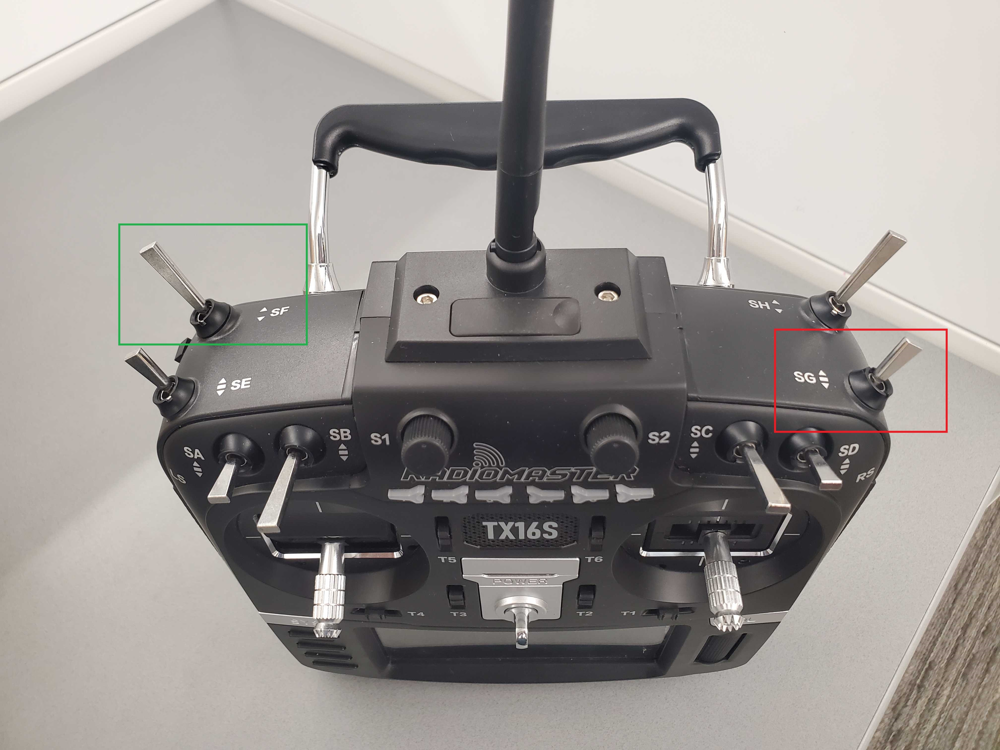

Secure Autonomous Systems
Instructor: Prof. Sibin Mohan, The George Washington University
CSCI 6907/3907 | Fall 2022 | TR 12:45PM - 02:00PM PT | SMTH 115
MP IV-A: Rover Setup
Administrivia
| Announcement Date |
Nov. 7, 2022 |
| Submission Date |
- |
| Submission Time |
- |
| Total Points |
0 |
Objective
In this MP, we want to learn how a rover workes.
The following objectives are designed to help you familiarize with some basic parts:
-
what is ROS and how we are using it.
-
how to ssh to a system
-
how to run and controll the rover.
Run ROS on Rover
What is ROS
The Robot Operating System (ROS) is an open-source framework that helps researchers and developers build and reuse code between robotics applications.
ROS is also a global open-source community of engineers,
developers and hobbyists who contribute to making robots better,
more accessible and available to everyone.
startup the Rover
- each rover has 2 batteies. make sure the rovers battries are fully charged
- turn on the radio controller
-
put on of the charged battery in correct position as shown in the picture and plug it to the rover

- reconnect the sensor by plug out and plug it in again adn turn on Rover ESC (Electronic Speed Controller) by pushing the button shown int the picture one time (dont hold the button too long)

- connect your computer to the same network as the rover the SSID is
SSID and the password is pass
-
accoarding to number of the rover you got you can find it's ip address here
| 1 |
192.168.1.x |
| 2 |
192.168.1.x |
| 3 |
192.168.1.x |
| 4 |
192.168.1.x |
| 5 |
192.168.1.x |
-
open a termianl on you computer and make a ssh connection to Rover by typing
ssh pi@rover-ip and put raspberry for the login password
-
we need to run several scripts tehough this shell so one way doing that is luch several shells by screen
first write this command to creat a new shell
screen -S ros_launch
in the new shell execute the rovers launch files
roslauch gwurover simple_control.launch
- detach the shell and go back to the first shell by pressing this sequnce of kesy
Ctrl+aand d
- you should be able to control the rover with the radio control by just moving the right stick
Caution
-
ALWAYS TRUN THE ROVER OFF FIRST. before turning the radio controller off please turn of the rover first.
If you dont do that the rover will go full truttle and wont stop.
- Check the battery every 10 minutes with the battery checker. if the battery level is lower than 20 percent please charge the battery.
This is how to use battery checker and battery charger.
- When you are done please put the battries on storgae mode
Run automated mission on Rover
- got back to the shell that you ran the launch file by typing
screen -r launch
- cancle the current runnig script with pressing ctr+c
- put the robot on the left down corner of the space specified for the rover
that position is the (0,0) position for the rover.
- run this command
roslaunch gwurover simple_pid.launch
- on the radio controller push the SG key(Red) to back and after that pull the SH key(Green) up to start the mission.

- the rover should follow a 2x2 rectangule
Submission Instructions
-
no submition needed! show the reslut to the TA at the time your booking to work with the rover.